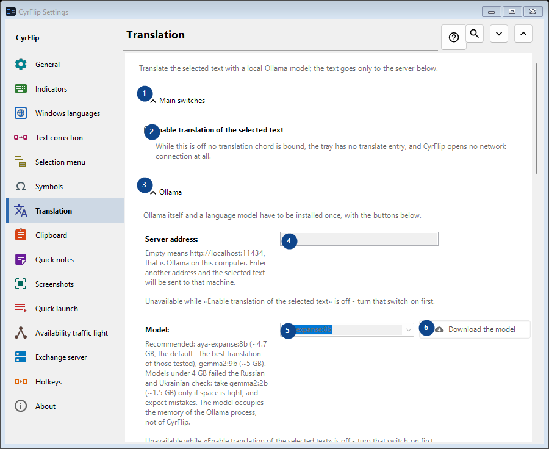
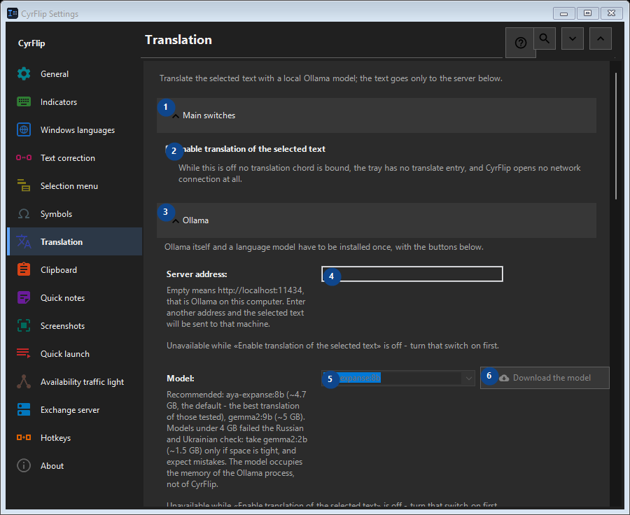

Translation
What this is for
Translate the selected text with a local Ollama model; the text goes only to the server below.


In this order
Settings apply immediately. There is no required order; use the groups below.
The elements
1. Main switches
Use this command when you need the action named above. Review any confirmation before accepting it.
Your shortcuts2. Enable translation of the selected text
While this is off no translation chord is bound, the tray has no translate entry, and CyrFlip opens no network connection at all.
Your shortcuts3. Ollama
Use this command when you need the action named above. Review any confirmation before accepting it.
Your shortcuts4. Server address
Unavailable while «Enable translation of the selected text» is off - turn that switch on first. This control is currently unavailable. Enable its feature or select an entry first.
Your shortcuts5. Model
Unavailable while «Enable translation of the selected text» is off - turn that switch on first. This control is currently unavailable. Enable its feature or select an entry first.
Your shortcuts6. Download the model - Model
Unavailable while «Enable translation of the selected text» is off - turn that switch on first. This control is currently unavailable. Enable its feature or select an entry first.
Your shortcuts7. Install Ollama
Unavailable while «Enable translation of the selected text» is off - turn that switch on first. This control is currently unavailable. Enable its feature or select an entry first.
Your shortcuts8. Start Ollama
Unavailable while «Enable translation of the selected text» is off - turn that switch on first. This control is currently unavailable. Enable its feature or select an entry first.
Your shortcuts9. Check the connection
Unavailable while «Enable translation of the selected text» is off - turn that switch on first. This control is currently unavailable. Enable its feature or select an entry first.
Your shortcuts10. Cancel
Use this command when you need the action named above. Review any confirmation before accepting it. This control is currently unavailable. Enable its feature or select an entry first.
Your shortcuts11. Start Ollama automatically when translating
Unavailable while «Enable translation of the selected text» is off - turn that switch on first. This control is currently unavailable. Enable its feature or select an entry first.
Your shortcuts12. Keep the model in memory (min)
Unavailable while «Enable translation of the selected text» is off - turn that switch on first. This control is currently unavailable. Enable its feature or select an entry first.
Your shortcuts13. Ollama itself and a language model have to be installed once, with the buttons below.
Choose or enter the value for the adjacent label. Review it before continuing. This control is currently unavailable. Enable its feature or select an entry first.
Your shortcuts14. Wait for the model to load no longer than (s)
Unavailable while «Enable translation of the selected text» is off - turn that switch on first. This control is currently unavailable. Enable its feature or select an entry first.
Your shortcuts15. Ollama itself and a language model have to be installed once, with the buttons below.
Choose or enter the value for the adjacent label. Review it before continuing. This control is currently unavailable. Enable its feature or select an entry first.
Your shortcuts16. Translation directions
Use this command when you need the action named above. Review any confirmation before accepting it.
Your shortcuts17. Add a direction...
Unavailable while «Enable translation of the selected text» is off - turn that switch on first. This control is currently unavailable. Enable its feature or select an entry first.
Your shortcuts18. Result
Use this command when you need the action named above. Review any confirmation before accepting it.
Your shortcuts19. Put the translation on the clipboard
Unavailable while «Enable translation of the selected text» is off - turn that switch on first. This control is currently unavailable. Enable its feature or select an entry first.
Your shortcuts20. Paste the translation over the selection right away
Unavailable while «Enable translation of the selected text» is off - turn that switch on first. This control is currently unavailable. Enable its feature or select an entry first.
Your shortcuts21. Show the source text next to the translation
Unavailable while «Enable translation of the selected text» is off - turn that switch on first. This control is currently unavailable. Enable its feature or select an entry first.
Your shortcuts22. Close the window after (s)
Unavailable while «Enable translation of the selected text» is off - turn that switch on first. This control is currently unavailable. Enable its feature or select an entry first.
Your shortcuts23. Unavailable while «Enable translation of the selected text» is off - turn that switch on first.
Choose or enter the value for the adjacent label. Review it before continuing. This control is currently unavailable. Enable its feature or select an entry first.
Your shortcuts